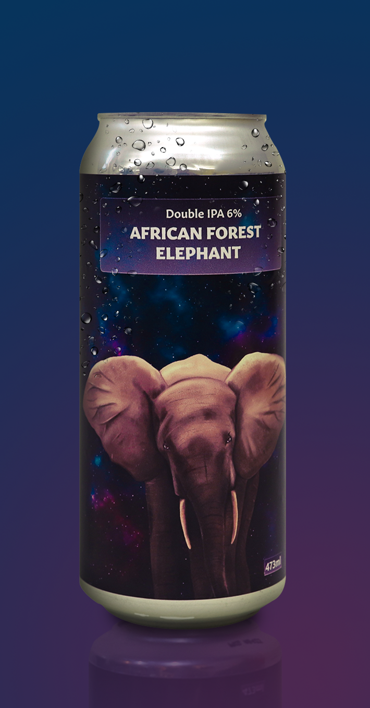

Craft For Change
Craft For Change
Craft For Change is a new craft beer for those who love a good IPA and Nature. We are on a mission to make the world a better place, one drink at a time! Each one of our cans represents an endangered animal. Those animals are symbolised with fantastic and creative artwork on their cans. Half of the proceeds for each can sold go directly towards the appropriate charity for each animal. Help support our cause by purchasing a drink, or donate directly using one of the links below!
Canadian Burrowing Owl
The Burrowing owl lives in small burrows in the ground rather than nests in the trees. These are burrows that they have either dug themselves or have taken over from other animals . They live in grasslands and other open areas. These small birds can be found in British Columbia, Alberta, Saskatchewan and Manitoba. Burrowing Owls have a high tolerance to carbon dioxide because they spend so much time underground where gas can accumulate in higher levels. Burrowing Owls have made use of PVC pipes and other human made items for their nests when left with no other options. Conservationists have made note of the Burrowing Owls adaptivity and have made efforts to provide human made alternatives to their homes such as buckets, pipes and tubing. This is in efforts to provide them with temporary homes while we work to save their natural ones. The main threats to the burrowing Owls are their territories being converted from grasslands to cropland. This process destroys their homes and leaves them with nowhere to go. Pesticides are also a main concern for the survival of Burrowing Owls. Because the Owls mainly eat insects and rodents, the use of pesticides severely limits their food sources. There are fewer than 1000 pairs of Canadian Burrowing owls left in Canada, making it one of the most endangered birds in our country.
Sea Turtle
Sea Turtles have been around for more than 100 million years and they might go extinct in our lifetime. They live all over the world and are amazing creatures. They are a highly migratable species and can grow from 2-6 ft in length. Sea Turtles swim thousands of miles throughout their lifetimes and can live to be around 50 years old. After waiting decades to reproduce, they travel back to the beach where they were born to lay their eggs.There are many threats towards the Sea Turtles. These threats include over harvesting, illegal trade, habitat loss, climate change and pollution. All of these are human caused problems. Pollution is a big problem for these sea creatures. Floating plastic in the ocean looks identical to jelly fish, a main source of food for the sea turtles. As many as 52% of all sea turtles have eaten plastic in their lives. Destruction/disturbance to their habitats has also been a big problem for the sea turtles. They rely heavily on beaches to lay their eggs. Vehicle traffic, coastal development and other various human activities have highly disturbed their nesting grounds.
African Forest Elephant
The African Forest Elephants are cousins to the African Savanna Elephant and they are classified as “critically endangered” according to the WWF website. They live in dense rainforests in central and west Africa. Being social animals, they live in groups of 20. They do not reproduce as quickly as Savanna Elephants so it is harder for their population to grow. They are important to the environment because they germinate the rain forests. Their diets consist mainly of leaves, grasses, seeds, fruit and tree bark. This makes the African Forest Elephants responsible for spreading leaves around the forests and growing trees. There are multiple reasons for their decline in population. The main reason and the most concerning one is poaching. People illegally hunt down these animals for their ivory. Deforestation is also a big concern for these Elephants as they lose their homes and environments. Their population has declined by 62% between 2002 and 2011. During that time period they have lost 30% of their geographical land.


ADD TO CART $3.50
Canadian Burrowing Owl
Double IPA | 473ml | ABV: 6% alc./vol.
Hazy IPA with aromas of grass, grapefruit, pine and tropical fruit.


ADD TO CART $3.50
Sea Turtle
Double IPA | 473ml | ABV: 6% alc./vol.
Hazy IPA with aromas of grapefruit, orange peel, pineapple and resinous hops.



ADD TO CART $3.50
Visual Design 3
Double IPA | 473ml | ABV: 6% alc./vol.
Hazy IPA with aromas of toasted grains and citrus hops.
DONATE
Canadian Burrowing Owl
Click here to donate to the Canadian Burrowing Owl.
Sea Turtle
Click here to donate to the Sea Turtle.
African Forest Elephant
Click here to donate to the African Forest Elephant.
Copyright © 2023 by Craft For Change All Rights Reserved.